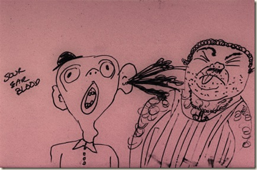
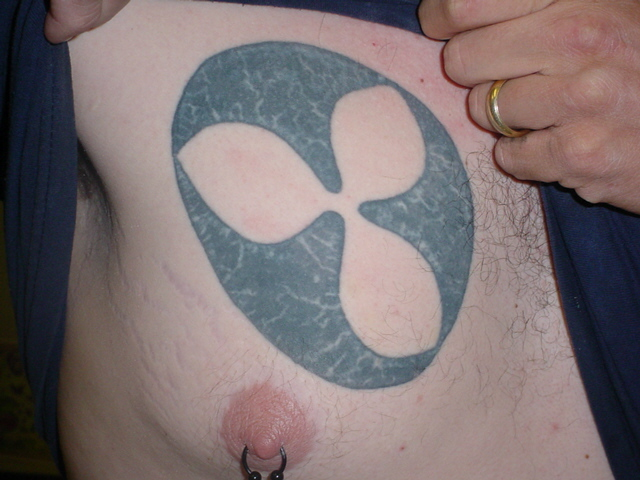
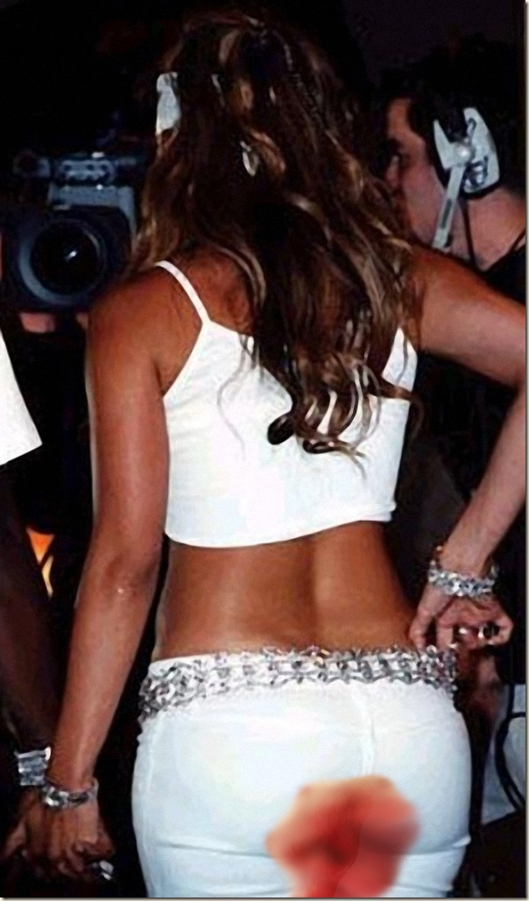

Sour Ear Blood Protects from High Pitch Damage

{kind=link}
Evolution, the mysterious force responsible for transforming us from happy-go-lucky banana peeling tree climbers into misery infected cubicle crawling keyboard tappers, is at it again. Scientists have found that in the last decades, evolution has provided a new defensive measure for the human ear. When irritated and aggravated these enhanced ear drums will pool with blood blocking the sound. If the noise continues, the ear blood will spray out at it’s attacker quieting them immediately.
Dr. B.B. Bibosh from the Yale Ear Lab, Yale University states, “In one of our case studies, a man was asked to listen to his girlfriend talk for a period of fifteen minutes uninterrupted. After six to seven minutes our monitors showed the ear building up a reservoir of blood. After 10 minutes the pressure began to build. At 13 minutes, the blood forcefully sprayed into the woman’s mouth quieting her immediately. This is evolution at it’s finest.”
The woman, name withheld, said, “I was just telling him about my day, then this sour ear blood sprayed right into my mouth. It was disgusting. I couldn’t go on. My mouth felt numb. It was so sour. I may never talk again.”
The “sour” ear blood appears to have a numbing effect similar to Ambesol, which in addition to the revolting sour taste of the also suppresses the attacker’s desire to speak.
Another man involved in the study explains, “When my wife or daughter talk, the sound just cuts right through me. You know what I mean right? Well after all those years of high pitch screeching and screaming, I guess my ears just couldn’t take it and they decided to fight back. Sometimes after the sour ear blood hits her, I swear my wife is gonna keep on talking. She has this look like she was going to keep yipping, but I told her she better be careful. Push your luck too much and acid might hit you next time.”
Dr. Bibosh concluded, “This is not just a male evolutionary trait. Many women have also shown great potential. Screechy boyfriends and husbands, do not get complacent. The sour ear blood may be just around the corner for you.”
More information about the latest in Human Ear Evolution may be uncovered at Yale Ear Lab.
Related posts
Bad Pussy From Last Century
When I was 20 years old, I saw my first old pussy. It was bad. I was working in a…

Bigfoot Sighting: Sasquatch Army Rises From Water, Attacks Maryland
Talbot County MD: Hundreds of witnesses have reported an army of subterranean creatures rising from the Chesapeake Bay. Green glowing…

Camden Area High Schools Pioneer New Trend in School Curriculum
Remember back in the day when you and your friends would steal the colored sharpies from the art room and…

“Blood Dump” Most Offensive Term, Period
Results of a 2008 patient care survey taken at NY/ NJ/ PA hospitals have found the most offensive term Health…
Comments